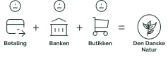

Det svarer til...
253.918m² naturområde

“En øre i brønden – et ønske for naturen”
Hver gang du bruger dit Dankort, donerer vi 1 øre til Den Danske Naturfond. Det bliver til mere end 10 millioner kroner hvert år, der går ubeskåret til opkøb og udvikling af mere vild og varig natur i Danmark. Vi kalder det Dankort Ønskebrønden.
Målet er ikke at forbruge mere, men at skabe mere plads til den danske natur.
Følg donationerne 2026
Donation estimeret indtil videre
3.047.902,49 KREller ca. størrelsen på
36 fodboldbanereller
50.784 4-personers telteEn øre af gangen



Tjek om du betaler med Dankort
Kig efter logoet
Alle betalinger med Dankort udløser donationer til Den Danske Naturfond – uanset om du betaler med kort, mobilen eller på nettet. Men betaler du egentlig med Dankort? Tjek dit fysiske kort og din wallet på mobilen, og kig efter Dankort logoet.

Bliv klogere på den danske natur
Samt hvor i landet de smukke steder befinder sig!